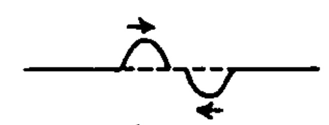

The diagram below shows two wave pulses traveling in opposite directions.
Prediction: Sketch what you expect the total waveform to look like when the two waves are half-overlapping and when the two waves are completely overlapping.
Experiment: In the simulation below:
Question: What does the total waveform look like when the two waves are half-overlapping and when the two waves are completely overlapping? Sketch the results in your notebook. How does this compare to your prediction?
The diagram below shows two wave pulses traveling in opposite directions.
Prediction: Sketch what you expect the total waveform to look like when the two waves are half-overlapping and when the two waves are completely overlapping.
Experiment: Modify the Gaussian pulses so that f(x,t) has a positive amplitude and g(x,t) has a negative amplitude. In the simulation below, enter:
\(f\left(x\right)=2.5\cdot\exp\left(-\left(x-t\right)^2\right)\) and \(g\left(x\right)=-2.5\cdot\exp\left(-\left(x+t\right)^2\right)\)
Question: What does the total waveform look like when the two waves are half- overlapping and when the two waves are completely overlapping? Sketch the results in your notebook. How does this compare to your prediction?
Consider two particular sinusoidal waves that can be expressed mathematically as:
\( f(x,t) = 2.5\sin(1.5x+3t) \) and \( g(x,t) = 2.5\sin(1.5x+3t) \)
Do NOT enter these into the simulation yet! First answer these predictions: Prediction 1: Suppose these two waves overlap at time t = 0. What do you expect to be the total amplitude of the resultant wave at this moment in time?
Prediction 2: Suppose these two waves overlap at time t = 0. By what distance would you have to shift one of the waves in order for the total amplitude of the resultant wave to be zero? Is there only one distance that will work?
Prediction 3: Suppose these two waves overlap at time t = 0. By what distance would you have to shift one of the waves in order for the total amplitude of the resultant wave to be 5? Is there only one distance that will work?
Experiment: We will consider a snapshot of these waves at time t = 0 by doing the following:
Set \( f(x,t) = 2.5\sin(1.5x) \) Set \(g(x,t) = 2.5\sin(1.5x) \)
Question 1: Measure the total amplitude of the resultant wave at this moment in time. How does this compare to your prediction?
Question 2: Test your prediction for the distances that you would have to shift one of the waves in order for the total amplitude to be zero by doing the following:
Set \( f(x,t) = 2.5\sin(1.5(x+d)) \) and add a slider for d
Set d to the actual value you predicted by typing in your value for d (instead of using the slider)
Leave \( g(x,t) \) as it was before.
Was your prediction correct? If not, what value(s) work?
Question 3: Test your prediction for the distances that you would have to shift one of the waves in order for the total amplitude to be 5 by adjusting d.
Was your prediction correct? If not, what value(s) work?